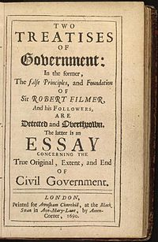

02
Some of
His Work
-
1689's
"Two Treatises of Gonvernment"
Diterbitkan tahun 1689
"Dua Tulisan tentang Pemerintahan"
Risalah Pertama adalah kritik terhadap Patriarcha karya Robert Filmer, yang membantah mendukung hak ilahi para raja. Menurut Locke, Filmer tidak mungkin benar karena teorinya menyatakan bahwa setiap manusia dilahirkan sebagai budak dari raja yang dilahirkan secara alami. Locke menolak untuk menerima teori seperti itu karena keyakinannya pada akal dan kemampuan setiap orang untuk secara luhur mengatur dirinya sendiri sesuai dengan hukum Allah. Risalah Kedua adalah solusi yang diusulkan Locke untuk pergolakan politik di Inggris dan di negara-negara modern lainnya. Teks ini meletakkan dasar untuk bentuk demokrasi modern dan untuk Konstitusi Amerika Serikat. Risalah Kedua terdiri dari kata pengantar singkat dan sembilan belas bab. Dalam bab i, Locke mendefinisikan kekuatan politik sebagai hak untuk membuat undang-undang untuk perlindungan dan regulasi properti. Dalam pandangannya, undang-undang ini hanya berfungsi karena orang-orang menerimanya dan karena itu untuk kebaikan publik. Dalam bab ii, Locke mengklaim bahwa semua manusia pada awalnya dalam keadaan alami. Seseorang di negara asal ini terikat oleh hukum-hukum alam, tetapi sebaliknya ia dapat hidup, bertindak, dan membuang harta miliknya sesuai keinginannya. Lebih penting lagi, manusia, bebas dari hukum sewenang-wenang pria lain, memiliki kewajiban untuk melindungi kepentingan satu sama lain, karena mereka semua sama-sama anak-anak Allah. Mereka juga memiliki kewajiban untuk menghukum orang-orang yang bertentangan dengan kehendak Tuhan dan berusaha untuk menyakiti orang lain dengan mengorbankan hidup, kebebasan, atau harta miliknya.